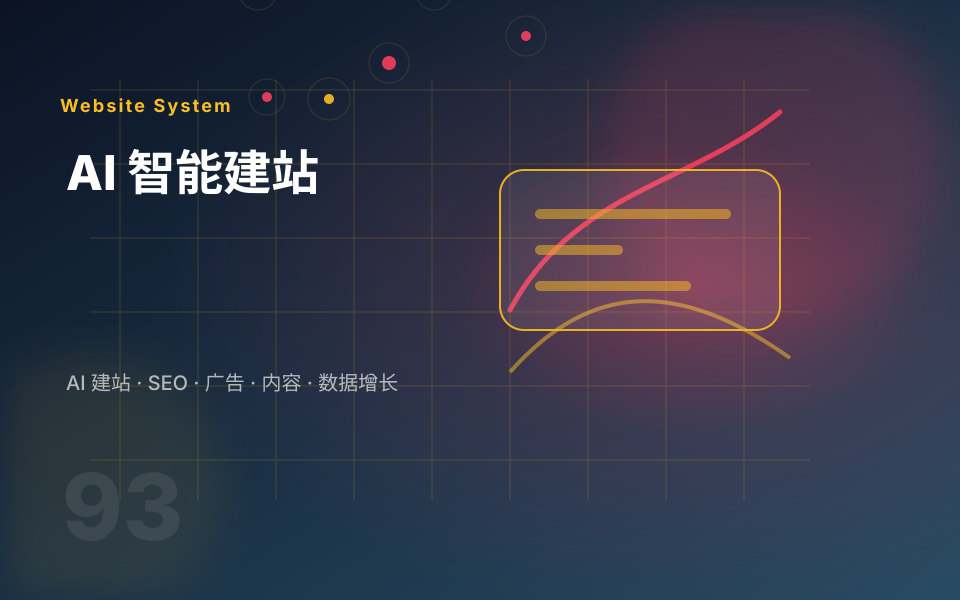

启动更快
可以快速生成页面框架、标题、卖点、FAQ 和首版内容，缩短从想法到上线的时间。
AI 建站是用 AI 辅助完成网站策划、页面结构、首版文案、视觉素材和基础布局，再由人工校准行业逻辑、品牌表达和转化路径。它适合快速启动，但仍需要专业判断来保证内容可信、页面清晰。
可以快速生成页面框架、标题、卖点、FAQ 和首版内容，缩短从想法到上线的时间。
适合早期试水、预算有限或资料尚不完整的项目，先做可用版本。
上线后根据用户反馈、询盘质量和搜索数据持续调整，而不是一开始就重投入。

三种建站方式没有绝对好坏，关键看你的业务目标是内容沉淀、在线交易，还是快速验证。
快速上线、市场验证、早期官网、活动页、轻量产品展示、预算有限的启动项目。
如果品牌要求高、产品复杂、SEO 竞争强或交易链路复杂，需要 WordPress、Shopify 或定制方案。
先用 AI 建站验证方向，再根据数据升级到 WordPress、Shopify 或定制开发。
如果你还不确定选哪一种，可以把三种方案放在一起看：WordPress 适合内容和 SEO，Shopify 适合交易，AI 建站适合快速启动。
告诉我你的业务类型、产品数量、是否需要在线交易、是否准备做 SEO，我会帮你判断更适合 WordPress、Shopify 还是 AI 建站。